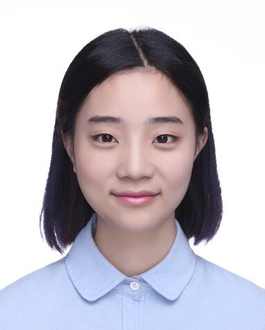

Demo of APDrawingGAN
This demo transforms a face photo into an artistic portrait drawing.

Please choose a frontal face photo similar to ID photo,
preferably with clear face features, no glasses and no long fringe.
choose a face photo